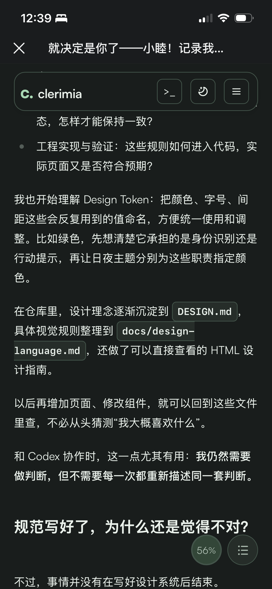
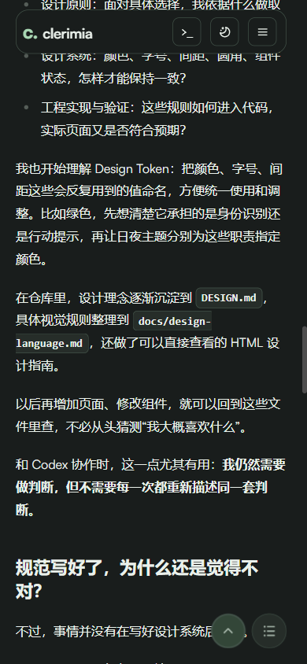
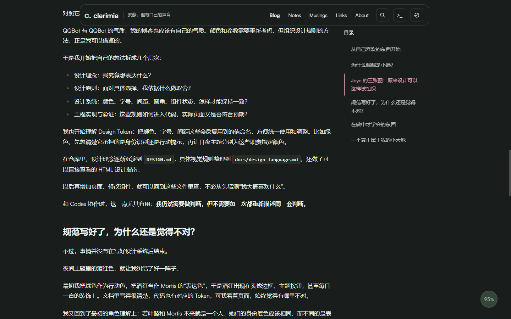
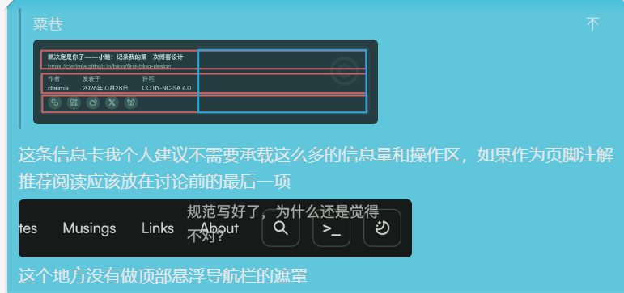
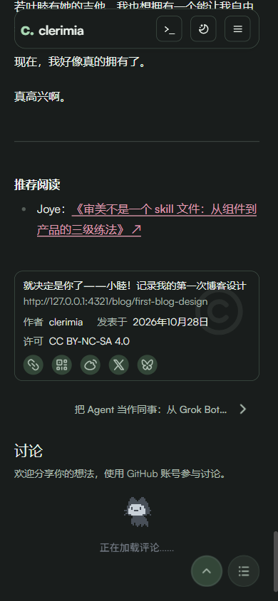

设计检查 · 2026-10-29
Issue #6 反馈检查报告
对照群友原始截图、当前本地页面和设计规范，重点检查文章阅读、移动端深色主题与文章末尾。本文记录观察与建议，没有修改网站 UI。
检查范围与结论
基于本地仓库当前版本 4618507，用 Chromium 模拟 390 × 844 CSS px 和约 1498px 宽桌面视口；观察首页及文章《就决定是你了——小睦！记录我的第一次博客设计》，重点查看深色主题。截图是本地开发服务，不代表线上部署与真实手机完全一致。原反馈截图来自手机内置网页视图，具体 CSS 视口、字体和缩放未知。
| 反馈 | 判断 | 建议优先级 |
|---|---|---|
| 路径换行 | 已在 390px 复现 | 高：局部调整并验证窄屏 |
| 左上角未对齐 | 反馈未标注具体对象；现有截图不足以确定比较基线 | 待补充：先确认指向 |
| 悬浮导航遮罩 | 当前有背景、边框和阴影；正文仍会滚至栏下 | 中：验证重叠的可读性与锚点定位 |
| 底部信息卡与分区 | 信息及操作集中；推荐阅读已在讨论之前 | 中：调整层级与分组 |
| 移动端深色体验 | 发现上述具体问题；整体反馈过宽，不能据此判定其他缺陷 | 持续检查 |
| 既视感与标题风格 | 属于主观感受，缺乏具体对照，不能当作已证实缺陷 | 设计判断，不急于改动 |
01 · 文件路径被拆开
已复现 · 中等影响阅读
原图中 docs/design-language.md 在 design- 后断行。当前版本在 390px 模拟视口再次出现同样的分行：浏览器测得同一个 code 元素有两个行内矩形，分别从 x=168px 和 x=20px 开始。代码标签的背景与边框随之分段，路径作为一个完整文件名的识别被打断。原文位于 文章源文件第 97 行。


建议与原因
针对这类较短、可整体容纳的行内文件路径，优先让其整体换到下一行；保留极长路径的安全断行机制，并在 320、390、430px 和两套主题下检查是否溢出或被裁切。这样既保留文件名的整体识别，也不为了一个例子让长代码在手机上溢出。避免对所有正文统一禁止换行。
02 · 左上角对齐与悬浮页头
对齐：待确认 · 页头：部分核实
issue 说“左上角未对齐”，但没有指出具体是哪两个边缘。原图左边的页头外框和正文大致同处一个页面边距，字标则在外框内另有内边距；这可能是有意的容器内缩，也可能不是群友所指的位置。不能仅凭这张图断定存在错位。建议请反馈者标出比较对象，或以页框、页头外框、正文左边缘分别测量，再决定是否调整；不要仅为了让字标与正文重合而消除必要的按钮内边距。
参考图说顶部悬浮导航没有遮罩。当前 header.css 的 .site-header.is-compact 已设置画布色背景、边框和轻阴影，滚动时切换为悬浮状态。本次深色截图中正文在页头后方滚动，栏的矩形区域有背景；栏外的内容仍然可见。悬浮栏遮住其下内容是这一布局的自然结果，实际需要判断的是内容是否能继续滚出、锚点是否被遮住，以及背景边界是否足够清楚。

建议与原因
先在真实手机的日夜主题下缓慢滚动，并测试目录跳转、浏览器顶部安全区和放大字体。如果文字在栏内透出或锚点长期被挡，再针对背景不透明度、顶部安全区或 scroll-margin-top 调整。无需先添加覆盖整屏的遮罩：它会改变页面阅读和交互层级。设计规范已经规定悬浮栏使用画布、边线和轻阴影。
03 · 文章末尾的信息与分区
信息密度值得优化 · 讨论前的顺序已符合反馈
参考图明确指出信息卡承载较多内容和操作，并建议推荐阅读放在讨论之前。当前页面依次出现正文里的“推荐阅读”、版权卡、文章导航、讨论区；BlogPost.astro 第 68–82 行也显示版权卡 → 文章导航 → 评论的顺序。推荐阅读已在评论之前，不需要为了满足这一条盲目调序。


版权卡同时列出标题、地址、作者、日期、许可和五个图标操作，来源见 Copyright.astro。这些内容并非都没有价值，但卡片集中了多种不同任务，读者刚结束正文就要面对一组密集信息；五个图标的用途也需要逐一辨认。
建议与原因
保留作者与许可等必要归属信息，优先弱化重复标题、长地址及低频分享操作的视觉权重；把复制链接作为清晰入口，其他分享方式可考虑收进有明确名称的次级入口。版权、继续阅读与讨论应通过留白和标题体现各自职责。是否折叠分享需要实际检查可发现性和触屏命中区域；不是直接删除所有操作。这样能缩短阅读结束到讨论的视觉路径，同时保留归属与分享能力。
04 · 深色移动端与个人风格
本次深色移动模拟可以清楚看到正文、页头和操作入口，但只覆盖一篇文章及有限状态；不能据此证明所有文字对比度、触屏操作、软键盘、安全区或第三方评论组件都已通过。建议继续在真实设备检查 320–430px、横屏及日夜主题，特别关注浮动目录/返回顶部是否遮挡正文与底部操作。设计规范也把真实设备、安全区和第三方组件列为待验证项。
“像某位设计师”与“标题和风格有一股味”是值得听取的感受，但反馈没有给出可比较的具体元素或对象。当前博客的设计主张是“安静，但有自己的声音”，内容、绿色身份与双主题共同承担辨识度。建议保留标题和个人表达，后续通过更多真实内容以及对版式、头像、交互细节的具体比较判断辨识度；不要因为一句相似的感受就整体换风格。
建议处理顺序
- 局部修正短文件路径换行，验证极窄屏与长路径回退。
- 梳理版权卡的信息层级和分享入口，保持推荐阅读及讨论的顺序清楚。
- 确认左上角的具体对齐对象，并在真实手机复核悬浮栏、锚点和安全区。
- 积累更多具体风格反馈，再决定是否调整个人表达。
证据来源：GitHub issue #6、原始反馈图、本地 Chromium 截图、DESIGN.md 与 设计系统文字规范。截图为观察记录，不是全设备验收。